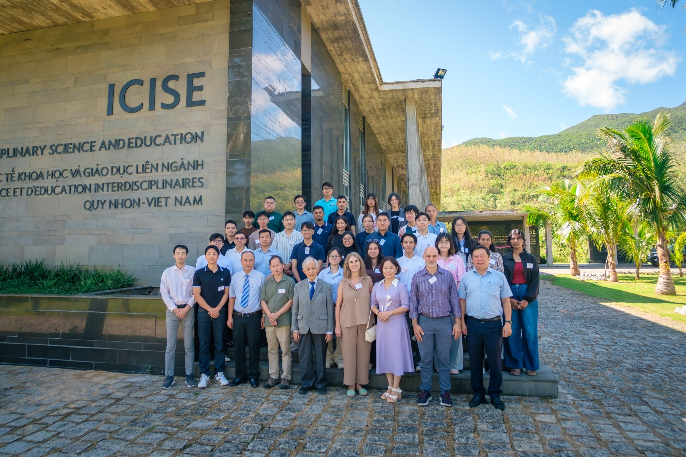

October 2026 · Quy Nhon, Vietnam
48th International School for Young Astronomers
I participated in the 48th International School for Young Astronomers in Vietnam, joining students and astronomers for three inspiring weeks of learning, discussion, and shared enthusiasm for astronomy.
